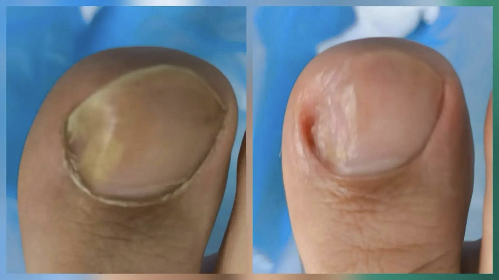

Врастание ногтевой пластины
Вросший ноготь — это состояние, при котором край ногтевой пластины начинает врастать в ногтевой валик. Это нарушение роста чаще всего возникает на большом пальце ноги и без должного внимания со временем усиливается и переходит в болезненную форму. Чаще с этой проблемой сталкиваются дети подросткового возраста (12–15 лет) и молодые люди.
Этапы проведения процедуры
Специалист - подолог применяет щадящие методы коррекции для устранения давления ногтя на боковой валик и уменьшения воспаления без хирургического вмешательства. Основа подхода — не удалить ноготь полностью, а восстановить его форму и нормализовать рост. В нашем центре применяются современные и максимально бережные способы коррекции, которые подбираются индивидуально.
- Осмотр. На первичном приёме специалист - подолог проводит детальный осмотр: оценивает форму ногтевой пластины, состояние боковых валиков, наличие воспаления, отёка, гноя или грануляционной ткани («дикого мяса»). Цель этого этапа — подтвердить диагноз, исключить другие патологии (подногтевую бородавку, подногтевую гематому) и выявить причину врастания.
- Первичная обработка. Перед началом процедуры зона вокруг ногтя тщательно очищается и дезинфицируется для предотвращения инфицирования.
- Аппаратная обработка. С помощью специального аппарата подолог аккуратно удаляет вросшую часть ногтевой пластины и избыточный ороговевший слой, который давит на кожу. Важно, что при этом не повреждаются здоровые ткани.
- Разгрузка и защита. На этом этапе подолог может установить тампонаду — поместить между краем ногтя и мягкими тканями специальный мягкий материал, чтобы снизить давление. Также может быть нанесён лечебный состав (антисептик, заживляющее средство).
- Установка корректирующей системы (по показаниям). Если ноготь деформирован или врастание повторяется, подолог может сразу в этот же визит установить корректирующую систему. Система механически приподнимает края ногтя, меняя направление его роста и снимая давление с валика.
- Рекомендации и контроль. Подолог подробно объясняет, как ухаживать за пальцем дома, чтобы закрепить результат. Он назначает дату следующего визита для контроля и, если была установлена корректирующая система, для её активации (коррекции натяжения).
Эти методы помогают уменьшить боль, восстановить комфорт при ходьбе и снизить риск повторного врастания без радикальных процедур.
Преимущество процедуры
Безопасность и стерильность
Все манипуляции проводятся с соблюдением строгих правил асептики. Используются только стерильные инструменты и одноразовые расходные материалы, что исключает риск инфицирования.
Устранение причины, а не только симптомов
Подолог не просто убирает боль и воспаление, а выявляет и корректирует причину врастания ногтевой пластины. Это может быть связано с неправильной стрижкой ногтей, тесной обувью, травмами, наследственными особенностями или ортопедическими проблемами. Исправляя форму ногтя, специалист предотвращает повторное врастание.
Безоперационный и малотравматичный подход
Современные методы подологии (ортониксия) позволяют в большинстве случаев обойтись без хирургического вмешательства. Для этого используются специальные коррекционные системы: титановые нити, скобы, пластины. Они мягко выпрямляют ноготь, устраняя давление на мягкие ткани.
Часто задаваемые вопросы
Больно ли лечить вросший ноготь у подолога?
Однозначно оценить болезненность процедуры невозможно, так как у каждого человека свой болевой порог. Болевые ощущения при процедуре, если есть, то длятся буквально несколько секунд. Причём сразу после её проведения вы можете вернуться к повседневным делам.
Можно ли скорректировать вросший ноготь без операции?
Да, во многих случаях это возможно. Современная подология использует безоперационные методы: ортониксию (коррекционные системы), тампонаду, аккуратную обработку и профессиональный уход. Эти способы позволяют уменьшить боль, снизить давление на кожу и направить рост ногтя в правильную сторону без радикальных вмешательств (удаление ногтя).
Когда требуется хирургическое вмешательство?
Специалист - подолог может рекомендовать обратиться к хирургу при выраженном воспалении, нагноении, неэффективности консервативных методов или множественных рецидивах.
Примеры работ
Нажмите «Показать», чтобы посмотреть фотографии полностью.

Запишитесь на приём
Оставьте заявку — мы свяжемся с вами и подберём удобное время.